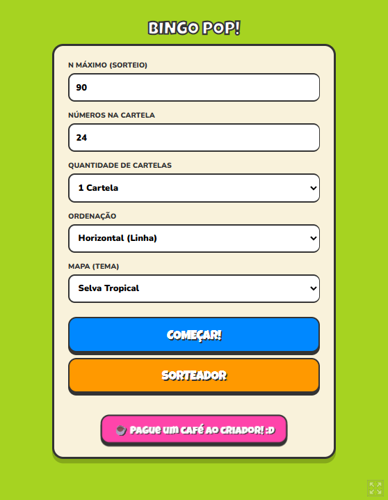
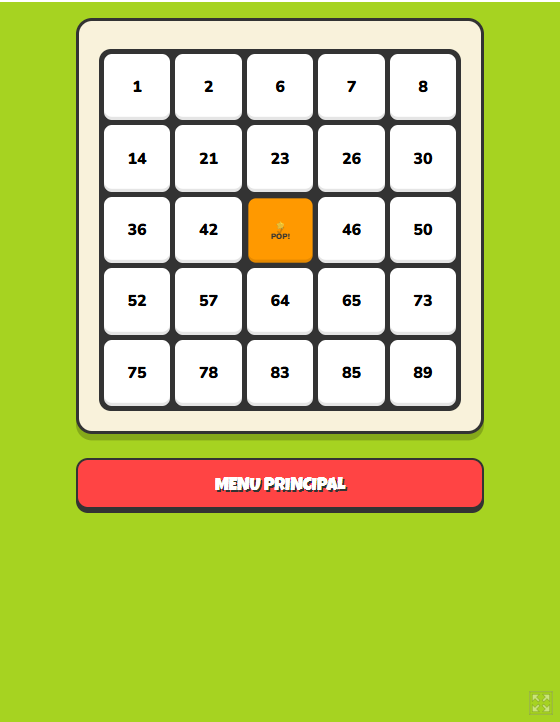
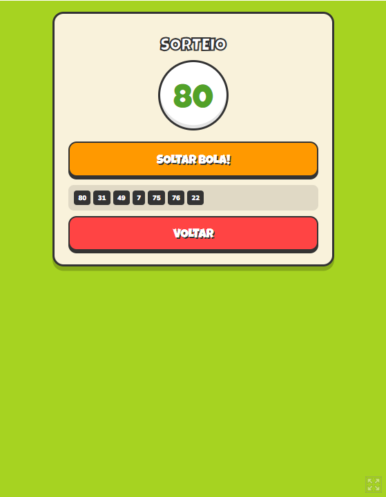
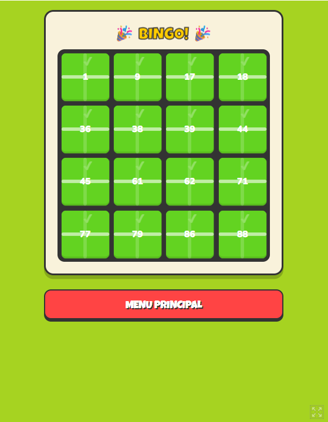
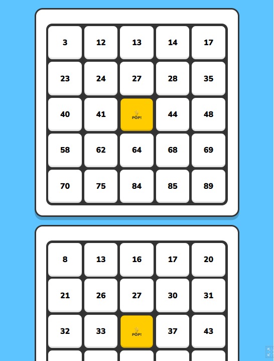

BingoPop
Jogo de bingo casual publicado no Itch.io. Nasceu de uma necessidade prática — jogar bingo em família sem depender de cartela de papel — e virou um jogo completo, com sorteador embutido, cartelas configuráveis e temas visuais.
01Sobre o projeto
O BingoPop cobre os dois lados da mesa. Quem organiza usa o sorteador, que sorteia as bolas sem repetição e mantém o histórico visível. Quem joga usa as cartelas, marcando os números com um toque.
Tudo é configurável antes de começar: número máximo do sorteio, quantos números cabem na cartela, quantas cartelas jogar ao mesmo tempo, o critério de vitória e o tema visual. Isso permite desde um bingo tradicional de 90 bolas até variações mais rápidas.
A detecção de vitória acompanha o critério escolhido (linha, coluna ou cartela cheia) e dispara a tela de BINGO automaticamente — ninguém precisa conferir na mão.
02O que o jogo entrega
-
Cartelas configuráveis
Número máximo do sorteio, quantidade de números e de cartelas definidos antes de jogar.
-
Sorteador embutido
Sorteia sem repetir e mantém o histórico das bolas já chamadas na tela.
-
Múltiplas cartelas
Jogue com várias cartelas simultâneas, como no bingo de verdade.
-
Critérios de vitória
Linha, coluna ou cartela cheia — escolhido na configuração.
-
Temas visuais
Mapas com paletas diferentes para variar a cara do jogo.
-
Detecção automática
O jogo identifica o bingo sozinho e comemora — sem conferência manual.
03Capturas de tela
Registros da interface — preservados aqui mesmo que o sistema saia do ar.




